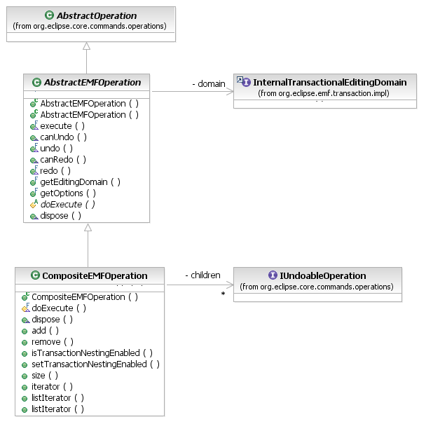

The IWorkspaceCommandStack executes EMF Commands by wrapping them in IUndoableOperations and executing them on its IOperationHistory. However, clients are encouraged to use the AbstractEMFOperation API, instead, to work directly with the operation history, to take advantage of such features as undo contexts.

[as SVG]
AbstractEMFOperations execute themselves within a transaction on their editing domain. In consequence, they provide rollback support and automatic undo/redo just as the RecordingCommand does in the core EMF Transaction API. To use it, simply define a subclass that implements the protected doExecute() method, performing whatever changes are required in the resource set.
// get the workbench's operation history, which is the default history
// used by the WorkspaceEditingDomainFactory
IOperationHistory history = workbench.getOperationSupport().getOperationHistory();
TransactionalEditingDomain domain = getEditingDomain();
IUndoableOperation operation = new AbstractEMFOperation(domain,
"Create Books in Libraries") {
protected IStatus doExecute(IProgressMonitor monitor,
Iadaptable info) throws ExecutionException {
Iterator iter = resource.getAllContents();
while (iter.hasNext()) { // changes are determined on-the-fly
Object next = iter.next();
if (next instanceof Library) {
((Library) next).getBooks().add(
EXTLibraryFactory.eINSTANCE.createBook());
}
}
return Status.OK_STATUS;
}};
operation.addUndoContext(myEditorContext);
history.execute(operation, new NullProgressMonitor(), null);
An AbstractEMFTransaction can be initialized with a map of transaction options. These options are then applied to the operation's transaction when it is executed on the operation history.
As is the case in the core EMF Transaction API, the AbstractEMFOperation's implementations of the undo() and redo() methods use the following options for the transactions created for undoing and redoing its recorded changes:
CompositeEMFOperations can compose both AbstractEMFOperations (including other composites) and operations on other domains. For example, a composite can change objects in an EMF resource as well as edit parts in a GEF drawing surface and code in Java source files that are all interrelated. Undo/redo is fully supported and preserves ordering dependencies between EMF and non-EMF changes. Transaction rollback correctly undoes non-EMF changes.
A CompositeEMFOperation can be initialized with a list of child operations, or they can be appended later. However, they must all be supplied before the composite is executed. Children cannot be added or removed after that time. The composite operation's undo context is an aggregate of the contexts of its children.
IOperationHistory history = workbench.getOperationSupport().getOperationHistory();
TransactionalEditingDomain domain = getEditingDomain();
Library mainBranch = getMainBranch();
CompositeEMFOperation composite = new CompositeEMFOperation(domain,
"Create Book and EditPart");
// some hypothetical AbstractEMFOperation subclass
CreateBookOperation createBook = new CreateBookOperation(domain,
mainBranch, "Great Expectations");
composite.add(createBook);
// some hypothetical non-EMF operation that visualizes the new book (available in
// the createBook operation after it has executed) in a GEF viewer
composite.add(new VisualizeBook(viewer, createBook));
history.execute(composite, new NullProgressMonitor(), null);
A CompositeEMFOperation, by default, executes child AbstractEMFOperations in nested transactions. For large nested operation structures, this can induce a lot of overhead that may not be necessary (depending, in particular, on pre-commit trigger requirements). The transaction structure can be optimized by telling the composite not to create a nested transaction for a child operation unless the child uses different transaction options than the parent, using the setTransactionNestingEnabled() method (passing false). Transaction options specified on child operations obey the usual rules for option inheritance in transaction nesting.
Finally, it is worth noting that the CompositeEMFOperation class might be expected to implement the Eclipse ICompositeOperation interface. The reason why it does not is that it does not support the IOperationHistory.openOperation() API. It is good practice with EMF Transactions to keep them as short as possible, especially read/write transactions that block all read access (on other threads) for their duration. The "open operation" would concept contradict this by promoting long, open-ended transactions.
Copyright (c) 2006, 2007 IBM Corporation and others. All Rights Reserved.